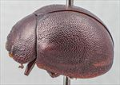
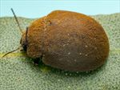
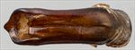
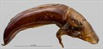
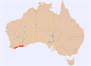

Click on images to enlarge


Male, Gibson, SW Western Australia


Male, Hopetoun, SW Western Australia


Aedeagus, dorsal view (Stokes N.P., SW Western Australia)


Aedeagus, lateral view (Stokes N.P., SW Western Australia)


Distribution
Name
Trachymela sp. Ta180
Reference specimen
2010-071a, Gibson, SW Western Australia.
Adult Description
Length: ♂ 7.9–8.7 mm (n=8), ♀ 9.1–9.9 mm (n=4).
Colouration:
- Head: Uniformly mid- to dark-brown, labrum yellowish-brown, mandibles brown with black tips; antennomeres 1–3 yellow-brown to brown, 4–11 similar or grading slightly, rarely much, darker towards distal segments.
- Pronotum: Dark brown, concolorous with or fractionally darker than rear of head, sometimes with vaguely defined, slightly darker areas.
- Scutellum: brown, concolorous with or slighly darker than disc of pronotum, broadly bordered in darker brown.
- Elytra: brown, concolorous with or, rarely, slightly paler than disc of pronotum, punctures concolorous with or slightly darker than interstices, humeral callus brown.
- Venter & Legs: Venter mid- to dark-brown, legs concolorous, inside surface of elytral epipleura brown.
- Cuticular Wax: Brown and very evenly and often very densely distributed.
Morphology:
- Shape: Almost evenly rounded from scutellum to apex, strongly convex (H/BL: ♂ 0.48–0.54, ♀ 0.50–0.54), highest point some distance anterior to middle of elytral margin (PGH: ♂ 50–57% BL, ♀ 49–53% BL).
- Head: Punctures relatively fine (pd ≈ 1.5–2.5 × ef) and quite evenly and densely distributed. Antennae moderately long (AL/BL: ♂ 37–41%, ♀ 33–34%), A4 ≈ A3, filiform.
- Pronotum: Almost evenly curved transversely, foveal depression obsolete or very shallow, lacking a central elevation, punctures on disc clearly impressed, similar in size to those on head, closely and rather evenly distributed, punctures becoming somewhat coarser from inside margin of foveal area towards lateral margin. Front margins join lateral margins in a smoothly rounded right-angle, with lateral margin initially almost straight for about half of length, then curving smoothly and gradually towards the much thicker rear margin.
- Scutellum: Smooth, punctured, punctures variable, from as deeply impressed, large and dense as those on disc of pronotum to much shallower and less densely distributed.
- Elytra: Surface evenly curved, punctures very closely spaced and mostly clearly defined over almost whole of elytral surface with no linear arrangement evident, convex interstices produce a rather finely granular appearance to the whole of elytral surface, some much finer punctures present on the interstices, verrucae absent throughout, surface discontinuous under humeral callus. Vertical extension of epipleura considerable (HCE/PW = 0.33–0.37).
- Venter: Prosternal process narrowest anteriorly, closed anteriorly, short setae present sparsely over prosternal process and mesoventrite, one long seta each on anterior and posterior trochanters, medium trochanters usually with one long straight and several relatively long, curved setae; front edge of metaventrite beveled, truncate; inner edge of epipleura setose (sometimes sparsely) posteriorly, forward to about posterior edge of 1st abdominal segment.
Male Genitalia (Aedeagus):
- Dimensions: moderate in length (LPE/BL = 30–34%).
- Dorsal view: shaft subparallel or narrowing very slightly from basal sulcus for two-thirds of its length, then expanding in a rounded arc toward base of spatula before sides converge smoothly to apex. Ostium relatively large; dorsal ostial processes narrow, projecting anteriorly to approximately level of spatula base, their margins converging to an acute, almost pointed apex. Spatula broad, triangular, margins sometimes faintly crenulate, with apex smoothly rounded.
- Lateral view: shaft curved slightly just anterior to basal sulcus, then almost straight to about 25% of distance from apex where ventral surface curves downwards noticeably and its thickness decreases towards apex, tip prominent and deflexed.
Similar species
- Ta181: This species occurs in the same geographical area as Ta180 and is of similar size and external morphology, but differs in the possession of an aedeagus that is considerably larger proportionally.
- Ta116: A smaller alta-group species that can be distinguished by its black venter, black epipleura and black humeral callus and scutellum.
Notes
- Taxonomy: Ta180 is one of the alta-group species and may be the same as Ta116.
- Host Associations: Ta180 has been collected from Eucalyptus utilis, and E. occidentalis or E. astringens (all Symphyomyrtus : Bisectae).
Copyright © 2026. All rights reserved.